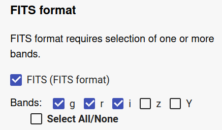
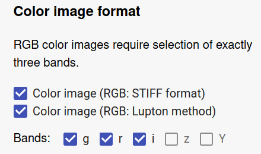
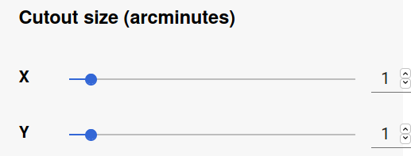
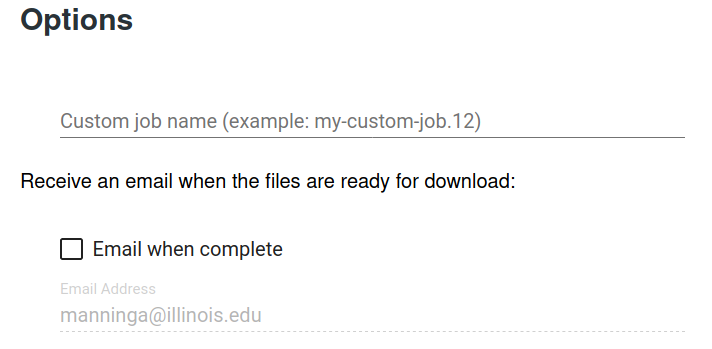

DESaccess Apps¶
Database Query¶
The database access page allows you to submit your own OracleDB queries directly to the database.
Use the query editor to compose your database query. The See examples button provides some example queries to explore and copy into the editor. Before submitting a job, you may use the Check syntax to validate your query syntax to avoid failed jobs due to typos.

To see results as quickly as possible, you can select Quick query. Query results are truncated at 1000 rows, and the processing time is limited to 30 seconds. Results are displayed at the bottom of the page.
For larger queries, you must specify an output file name, indicating the desired file format. Options include CSV, H5, and FITS. You may optionally choose to compress the CSV and H5 files.

Specifying a custom job name can help make it easier to filter the job list on the Job Status page to find one or more jobs.
To be notified when your job is complete, select the Email when Complete option and ensure that the email address is correct.

Cutout Service¶
The Cutout Service allows you to download raw or color image data based on input coordinates and areal dimensions.
Select the data release tag associated with the data set you wish to access. In the text box, enter the positions in the sky that designate the centers of your cutout images in the form of a CSV-formatted table, with a header row naming the table columns for subsequent lines. Each position must be specified using either RA/DEC sky coordinates or Coadd tile ID. Columns can be in any order. Omitted values will be set to the default parameter values you specify using the other form elements as described below.
This example shows all possible columns you can include:
RA,DEC,COADD_OBJECT_ID,XSIZE,YSIZE,COLORS_FITS,RGB_STIFF_COLORS,RGB_LUPTON_COLORS,RGB_MINIMUM,RGB_STRETCH,RGB_ASINH,MAKE_FITS,MAKE_RGB_STIFF,MAKE_RGB_LUPTON
46.275669,-34.256000,,0.90,1.30,g,gry;riy,,,,,true,false,true
,,61407409,1.1,0.8,z,,riy,0.9,40.0,11.0,true,,true
This example shows the minimum columns you must include when specifying positions only by coordinates:
RA,DEC
46.275669,-34.256000
or only by Coadd ID
COADD_OBJECT_ID
61407409
61407435
Select the FITS format to generate raw data files. You will generate one FITS file for each color band selected (if available).
Select one or both of the color image formats to generate files suitable for visual inspection. Two color rendering methods are offered: STIFF and Lupton.
Exactly three color bands must be selected. To change the default selection, first deselect some bands to enable selection of the ones you want.
The areal dimensions of the requested cutout images are specified in units of arcminutes.
You may optionally include XSIZE and YSIZE columns in the positions CSV-formatted text if you wish to request different areal dimensions for each requested cutout.
Specifying a custom job name can help make it easier to filter the job list on the Job Status page to find one or more jobs.
To be notified when your job is complete, select the Email when Complete option and ensure that the email address is correct.
When a cutout job is complete, there are three files generated:
cutout_[JOB_ID].log, positions_[JOB_ID].csv, and
summary.json. The first two files contain the log output and a
CSV-formatted table of the processed positions table, which is
synthesized from the hierarchical compilation of the input
CSV-formatted positions table, then the default parameter values
specified by the user, and then the system defaults. The
summary.json file contains the complete set of information
about the job results in a format amenable to both programmatic
parsing and human readability. The following is an example of this
file:
{
"options": {
"colors_fits": "y",
"db": "DESDR",
"jobid": "27ddedf1ba3646a8b552cb0718290331",
"make_fits": true,
"make_rgb_lupton": true,
"make_rgb_stiff": true,
"release": "DR1",
"rgb_lupton_colors": "izy",
"rgb_stiff_colors": "riz",
"username": "jtest",
"xsize": 1.5,
"ysize": 0.5,
"tiledir": "auto"
},
"cutouts": [
{
"RA": 21.58813,
"DEC": 3.48611,
"COADD_OBJECT_ID": null,
"XSIZE": 1.5,
"YSIZE": 0.5,
"FITS_COLORS": "g",
"RGB_STIFF_COLORS": "gry;riy",
"RGB_LUPTON_COLORS": "gry",
"RGB_MINIMUM": 1.0,
"RGB_STRETCH": 50.0,
"RGB_ASINH": 10.0,
"MAKE_FITS": 1.0,
"MAKE_RGB_STIFF": 1.0,
"MAKE_RGB_LUPTON": 1.0,
"COLORS_FITS": "y",
"POSITION_TYPE": "coord",
"RA_ADJUSTED": 21.58813,
"FILES": [
"DESJ012621.1512+032909.9960_y.fits",
"DESJ012621.1512+032909.9960_g.fits",
"DESJ012621.1512+032909.9960_r.fits",
"DESJ012621.1512+032909.9960_i.fits",
"DESJ012621.1512+032909.9960_gry_stiff.png",
"DESJ012621.1512+032909.9960_riy_stiff.png",
"DESJ012621.1512+032909.9960_gry_lupton.png"
],
"TILEDIR": "/des003/desarchive/multiepoch/Y3A1/r2624/DES0126+0335/p01/coadd/",
"TILENAME": "DES0126+0335",
"SEXAGECIMAL": "DESJ012621.1512+032909.9960",
"ALPHAWIN_J2000": 21.58813,
"DELTAWIN_J2000": 3.48611
},
{
"RA": 21.57213,
"DEC": 3.78611,
"COADD_OBJECT_ID": null,
"XSIZE": 0.9,
"YSIZE": 1.3,
"FITS_COLORS": "rg",
"RGB_STIFF_COLORS": "gry;riy",
"RGB_LUPTON_COLORS": "gry",
"RGB_MINIMUM": 1.0,
"RGB_STRETCH": 50.0,
"RGB_ASINH": 10.0,
"MAKE_FITS": 1.0,
"MAKE_RGB_STIFF": 1.0,
"MAKE_RGB_LUPTON": 0.0,
"COLORS_FITS": "y",
"POSITION_TYPE": "coord",
"RA_ADJUSTED": 21.57213,
"FILES": [
"DESJ012617.3112+034709.9960_y.fits",
"DESJ012617.3112+034709.9960_g.fits",
"DESJ012617.3112+034709.9960_r.fits",
"DESJ012617.3112+034709.9960_i.fits",
"DESJ012617.3112+034709.9960_gry_stiff.png",
"DESJ012617.3112+034709.9960_riy_stiff.png"
],
"TILEDIR": "/des003/desarchive/multiepoch/Y3A1/r2624/DES0126+0335/p01/coadd/",
"TILENAME": "DES0126+0335",
"SEXAGECIMAL": "DESJ012617.3112+034709.9960",
"ALPHAWIN_J2000": 21.57213,
"DELTAWIN_J2000": 3.78611
},
{
"RA": 46.29566,
"DEC": -34.256,
"COADD_OBJECT_ID": null,
"XSIZE": 0.9,
"YSIZE": 1.3,
"FITS_COLORS": "iz",
"RGB_STIFF_COLORS": "gry;riy",
"RGB_LUPTON_COLORS": "gry",
"RGB_MINIMUM": 1.1,
"RGB_STRETCH": 60.0003,
"RGB_ASINH": 11.12,
"MAKE_FITS": 1.0,
"MAKE_RGB_STIFF": 0.0,
"MAKE_RGB_LUPTON": 0.0,
"COLORS_FITS": "y",
"POSITION_TYPE": "coord",
"RA_ADJUSTED": 46.29566,
"FILES": [
"DESJ030510.9584-341521.6000_y.fits"
],
"TILEDIR": "/des003/desarchive/multiepoch/Y3A1/r2674/DES0305-3415/p01/coadd/",
"TILENAME": "DES0305-3415",
"SEXAGECIMAL": "DESJ030510.9584-341521.6000",
"ALPHAWIN_J2000": 46.29566,
"DELTAWIN_J2000": -34.256
}
],
"query_time": "0.32",
"unmatched_positions": {
"coord": {
"RA": [],
"DEC": []
},
"coadd": []
},
"processing_time": "48.07",
"size_on_disk": "6.08 MB",
"number_of_files": 14
}
Job Status¶
The Job Status column, labeled by the icon, indicates if a job is in progress , is complete , or has failed .
The Job Type column, labeled by the icon, indicates the type of the job. For most people this is either a database query or a cutout type.
Jobs may be sorted on multiple columns. For example, you may want to list jobs in progress at the top of the list, where they are then sorted by job type. Alternatively, you may want to see all of you database query jobs first, sorted by status so you can see all the query jobs still in progress at the top.

Filter the job list by typing part of the desired job name or ID into the column header text fields. Job IDs are unique, but the same job name can be applied to multiple jobs, providing a way to filter your job list to show a group of related jobs.

Job details and results are accessed by clicking the name or ID in the list. The dialog contains a button to open a listing of the generated output files for download (see below for details about programmatic access to job output files). If the job is a cutout job, and there color image files were generated using the Lupton or STIFF methods, an image gallery is provided for easy image browsing. If the job is a database query job, the job query text is displayed with a button to conveniently copy the query back into the editor on the DB Access page.


Table Browser¶
The DES Tables browser shows you all the DES database tables you have permission to view. For each table in the list, you can view a description of the table’s schema by toggling the checkbox on that table’s row.
TileFinder¶
TileFinder allows you to search for DES data tiles based on sky coordinates or the name of the tile containing the data. Download links are generated for all available tile data across all relevant data releases.